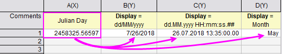
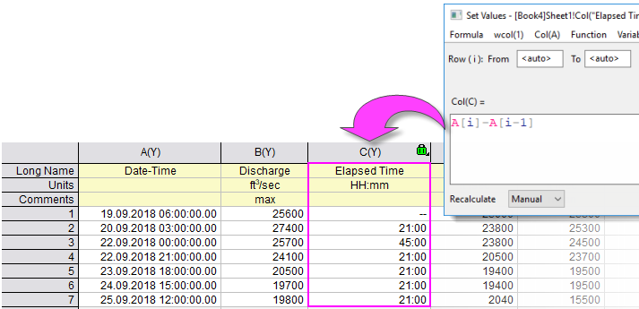

Mathematische Operationen mit Datum und Zeit
Date-Time-Math-Operations
Das Importieren von Datums-/Zeit-Daten wurde für die neueren Versionen von Origin stark verbessert. Origin 2020b fügte einen verbesserten Import von Datums-/Zeitdaten für den Text-/CSV-Konnektor hinzu und Origin 2021 verbesserte den Umgang mit Datums/-Zeitdaten beim Kopieren/Einfügen von MS Excel.
In Bezug auf den älteren, auf X-Funktionen basierenden Import: Ihre Daten werden wahrscheinlich als Text behandelt werden, es sei denn, Sie importieren Datums-/Zeitdaten mit Hilfe eines Filters oder durch Festlegen eines benutzerdefinierten Formats in ASCII-Optionen (Sie können eine schnelle Prüfung durchführen, indem Sie nachsehen, ob die Datums-/Zeitdaten im Arbeitsblatt links ausgerichtet sind (Text) oder rechts (numerisch)). Um Ihre Datums-/Zeit-Daten in mathematischen Operationen zu verwenden (z. B. Berechnungen der abgelaufenen Zeit), müssen Sie sicherstellen, dass sie passend formatiert sind und als numerische Daten behandelt werden.
Wenn Sie mathematische Operationen für Datums-/Zeitdaten durchführen müssen, achten Sie darauf, dass es in Origin eine große Anzahl von Standardfunktionen für date-time, string und math gibt, mit denen numerische Datums-/Zeitdaten und Datums-/Zeitzeichenketten bearbeitet werden können.
 |
Standardmäßig werden Datum-Zeit in Origin (Format = Datum, aber Datum schließt eine Zeitkomponente ein) intern als Julianische Tageswerte (double) gespeichert, wobei der ganzzahlige Anteil des Werts Tag ist und die Bruchteile Sekunden sind. Ausgehend von aktuellen Daten, ist die Auslösung in diesem System auf 0,0001 Sekunden begrenzt, wenn bei der vierten Dezimalstelle gerundet wird. Beachten Sie, dass seit Version 2019 Origin ein "2018"-Datumssystem unterstützt, in dem der "Zeitpunkt Null" mit dem 1. Januar 2018 00:00 definiert wird. In diesem System ist der ganzzahlige Teil kleiner und lässt eine höhere Auflösung für den Bruchteil zu. In diesem "2018"-System können Messungen von bis zu 10-8 Sekunden unterstützt werden.
|
Datum, Zeit, Monat, Wochentag
Datums- und Datum-/Zeit-Werte in Origin werden intern gespeichert als astronomische Julianische Tageszahlen des Datentyps double(8). Es ist wichtig, daran zu denken, dass diese intern gespeicherten Werte unabhängig von jeder Anzeigeoption sind, die Sie für Ihre Datums-/Zeit-Daten wählen mögen. Es sind diese Julianischen Tageswerte, die für das Durchführen von mathematische Operationen auf Datums- und Zeitdaten verwendet werden.
-
- 
Die andere Sache, die wichtig zu beachten wäre, ist, dass Sie ohne Präzisionsverlust frei zwischen allen unterstützten Anzeigeoptionen für Datum und Zeit wechseln können, weil der intern gespeicherte Wert nicht von der Wahl des Anzeigeformats beeinflusst wird (d. h., der Wechsel von einem in Teilsekunden formatierten Datums-/Zeit-Wert zu Monat und zurück zum ursprünglichen Datums-/Zeit-Wert macht keinen Unterschied für den zugrunde liegenden Wert -- von der Präzision geht nichts verloren).
Origin unterstützt vier grundlegende Formate: Datum, Zeit, Monat und Wochentag. Für jedes dieser Formate gibt es eine Anzahl von unterstützten Anzeigeoptionen (z. B. Monat kann "Jan", "Januar" oder "J" sein zusätzlich zu den Anzeigeoptionen für Monat, die in den Datumsnotationen verwendet werden).
Weitere Informationen finden Sie unter:
- Die Optionen für Format im Dialog Spalteneigenschaften
- Die Optionen für Anzeige im Dialog Spalteneigenschaften
Mathematische Operationen mit Datum und Zeit: Datums- und Zeitangaben
Wenn Sie ein Arbeitsblatt haben, in dem die Spalte "A" einige Datums-/Zeitwerte enthält und die Spalte "B" einige Messungen, die bei jedem Datums-/Zeitwert in Spalte "A" gemacht wurden, möchten Sie vielleicht wissen, wie viel Zeit zwischen jeder Messung vergangen ist. Sie können dies einfach bestimmen, indem Sie eine dritte Spalte "C" erstellen und dann den Dialog Werte setzen verwenden, um einen Datensatz der vergangenen Zeit zwischen den Messungen zu erzeugen.
A[i]-A[i-1] //for i = 2 to last row of column A
-
- 
 |
Origin 2021b erhöhte die Beschränkung der Zeitformate von 240 auf 548 Tage (d. h., Sie können jetzt 13151:00 in eine Zeitspalte eingeben, die auf Anzeige = HH:mm gesetzt ist, und es wird 13151:00 angezeigt. Die Eingabe von 13152:00 dagegen zeigt 00:00 an). Beim Berechnen von verstrichenen Zeiträumen, die den Verlauf von mehr als 548 Tagen betreffen, erlaubt das Ändern der Spalte Format von Zeit auf Numerisch Ihnen, die Zeit in Tagen nachzuverfolgen, einschließlich fraktionale Komponenten.
|
Mathematische Operationen mit Datum und Zeit: Monate
Wie erwähnt gibt es eine Anzahl von Origin-Funktionen, die verwendet werden können, um numerische und Datums-/Zeit-Textzeichenketten zu bearbeiten. Eine Liste dieser Funktionen befindet sich im LabTalk Scripting Guide. Beim Konvertieren von numerischen Werten in Monatsdarstellungen verwendet Origin eine dieser Funktionen - die Funktion mod (modulus).
Monate werden von Januar (1) bis Dezember (12) durchnummeriert. Zahlen größer als 12 werden bei der Umwandlung in einen Monat mit einer Modulo-Funktion umgerechnet (siehe Mod). Die LabTalk Modulo-Funktion verwendet die folgende Syntax:
mod(x,y) = der Rest der Division der Ganzzahl x geteilt durch die Ganzzahl y.
Zum Beispiel:
46 wird z.B. in Oktober umgewandelt, da mod(46,12) 10 entspricht und 10 für Oktober steht (Dezember entspricht in diesem Fall 0).
Beachten Sie, dass Sie keine Werte in eine Zelle eingeben können, die sich außerhalb des Bereichs von 1 bis 12 befinden, wenn in dieser Zelle das Format auf Monat festgelegt wurde. Falls Sie dies dennoch machen, zeigt Origin einen fehlenden Wert in dieser Zelle an. Um solche Werte in ein Arbeitsblatt einzugeben, legen Sie das Format auf Text & Numerisch fest und geben Sie Ihre Zahlen ein. Danach können Sie das Format der Spalten auf Monat zurücksetzen.
Mathematische Operationen mit Datum und Zeit: Tage
Wochentage sind von Sonntag (0) bis Samstag (6) durchnummeriert. Zahlen größer als 6 werden bei der Umwandlung in einen Tag mit einer Modulo-Funktion umgerechnet.
Zum Beispiel:
46 wird z.B. in Donnerstag umgewandelt, da mod(46,7) 4 ergibt und 4 für Donnerstag steht.
Beachten Sie, dass Sie keine Werte in eine Zelle einer Spalte eingeben können, die sich außerhalb des Bereichs von 0 bis 6 befinden, wenn in dieser Zelle das Format auf Tag festgelegt wurde. Falls Sie dies dennoch machen, zeigt Origin einen fehlenden Wert in dieser Zelle an. Um solche Werte in ein Arbeitsblatt einzugeben, legen Sie das Format auf Text & Numerisch fest und geben Sie Ihre Zahlen ein. Danach können Sie das Format der Spalten auf Tag zurücksetzen.